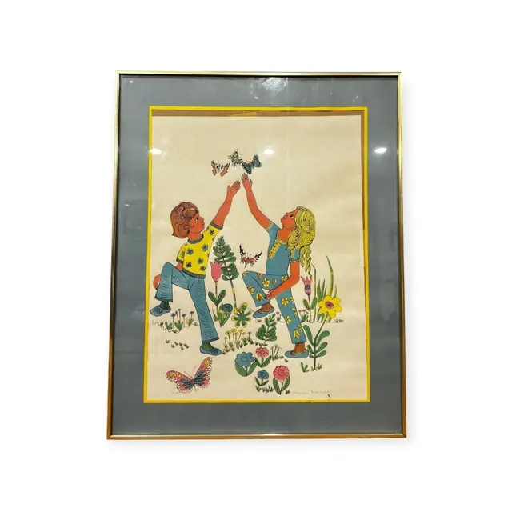
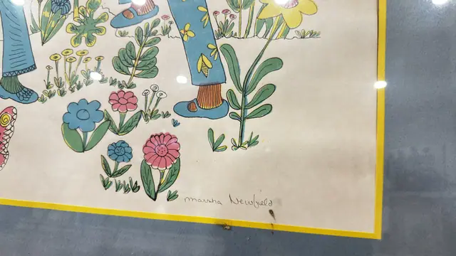
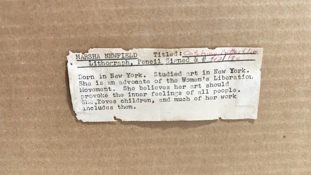

Paintings & Prints
Marsha Newfield 'Catching Butterflies' Lithograph, Numbered Edition, Framed
MARSHA NEWFIELD · 1970s to 1980s
Price Upon Request



About the Item
MARSHA NEWFIELD. A charming folk-style lithograph of a boy in a yellow polka-dot shirt and a girl in denim reaching skyward toward a cluster of butterflies. Around and below them the ground is filled with flat outlined daisies, blue and pink blooms and leafy sprigs, plus more butterflies at the lower edge. Everything is drawn with an even black contour line and filled with clear flat colour on a cream ground bounded by a printed yellow border. Medium: lithograph on paper. Signed lower right of the sheet, in pencil, reading "marsha Newfield". Edition: 102/180, pencil signed. Inscribed on the reverse or mount: marsha Newfield (pencil, lower right of the sheet); MARSHA NEWFIELD Titled: Catching Butterflies; Lithograph, Pencil Signed & # 102/180; Born in New York. Studied art in New York. She is an advocate of the Women's Liberation Movement. She believes her art should provoke the inner feelings of all people. She loves children, and much of her work includes them.. Condition: The sheet has warmed to a cream tone with light overall toning; a small dark spot and a slight cockle appear at the lower right of the sheet near the yellow border. Glazing shows scattered reflections. The typed backing label is torn at its edges.
Details
- Creator:
- MARSHA NEWFIELD
- Creation Year:
- 1970s to 1980s
- Dimensions:
- Height: 30.5 in (77.47 cm)
Width: 24.25 in (61.59 cm)
outside of frame - Medium:
- lithograph on paper
- Edition:
- 102/180, pencil signed
- Period:
- 20Th
- Condition:
- Offered in the condition shown in the photographs.
- Reference Number:
- VO-193
- Documentation:
- No certificate, but a typed biographical dealer label is glued to the backing board naming the artist, title, medium and edition number
- Gallery Location:
- marsha Newfield (pencil, lower right of the sheet); MARSHA NEWFIELD Titled: Catching Butterflies; Lithograph, Pencil Signed & # 102/180